11 The bacQC pipeline
- Run a QC workflow on raw sequencing data.
- Describe what the bacQC pipeline does.
- Identify poor quality sequence data.
- Identify contamination by non-target species in sequence data.
11.1 Pipeline Overview

bacQC is a bioinformatics analysis pipeline written in Nextflow that automates the Quality Control of short read sequencing data. It runs the following tools:
fastQC- assesses sequencing read qualityfastq-scan- calculates FASTQ summary statisticsfastp- performs adapter/quality trimming on sequencing readsKraken 2- assigns taxonomic labels to readsBracken- refinesKraken 2assignmentsKrona- provides visualisations ofBrackenoutputsMultiQC- summarises and creates visualizations for outputs fromfastQC,fastp,Kraken 2andBracken
See Course Software for a more detailed description of each tool.
Along with the outputs produced by the above tools, the pipeline produces the following summaries containing results for all samples run through the pipeline (found in the metadata and multiqc directories):
raw_fastq-scan_summary.tsv- final summary of FASTQ summary statistics for input files in TSV formattrim_fastq-scan_summary.tsv- final summary of FASTQ summary statistics for trimmed FASTQ filesread_stats_summary.tsv- final summary of pre- and post-trimming sequence statistics in TSV formatspecies_composition.tsv- final summary of taxonomic assignment in TSV format in TSV formatmultiqc_report.html- final summary of sequence quality, trimming and species composition for input files in HTML format
11.2 Prepare a samplesheet
Before we run bacQC, we need to prepare a CSV file with information about our sequencing files which will be used as an input to the bacQC pipeline (for this exercise we’re going to QC the TB dataset described in Introduction to Mycobacterium tuberculosis). The pipeline’s documentation gives details about the format of this samplesheet.
11.3 Running bacQC
Now that we have the samplesheet, we can run the bacQC pipeline. First, let’s activate the nextflow software environment:
mamba activate nextflowThere are many options that can be used to customise the pipeline but a typical command is shown below:
nextflow run avantonder/bacQC \
-r "v2.0.1" \
-profile singularity \
--input SAMPLESHEET \
--outdir results/bacqc \
--kraken2db databases/k2_standard_08gb_20240605 \
--kronadb databases/krona/taxonomy.tab \
--genome_size GENOME_SIZE The options we used are:
-r- tellsNextflowto pull themainversion ofbacQCfrom Github-profile singularity- indicates we want to use the Singularity program to manage all the software required by the pipeline (another option is to usedocker). See Data & Setup for details about their installation.--input- the samplesheet with the input files, as explained above.--kraken2db- the path to the directory containing the Kraken2 database files.--kronadb- the path to Krona’s database file (with the.tabextension).--genome_size- the estimated genome size of your samples -fastq-scanuses this to calculate the depth of coverage across the genome.
11.4 bacQC results
In the previous exercise, we left bacQC running. While it runs, we can look at the preprocessed output (preprocessed/bacqc) to see the various directories containing output files created by bacQC:
| Directory | Description |
|---|---|
bracken |
Contains the results of the re-estimation of taxonomic abundance by Bracken |
fastp |
Contains the results of the trimming and adapter removal performed by fastp |
fastqc |
Contains QC metrics for the FASTQ files generated with fastQC |
fastqscan |
Contains summary statistics for the FASTQ files generated with fastq-scan |
kraken2 |
Contains the results of taxonomic assignment with Kraken 2 |
krona |
Contains HTML files with visual representations of taxonomic assignments with Bracken |
metadata |
Contains summary files for outputs from fastq-scan and Kraken 2 |
multiqc |
Contains a HTML file containing summaries of the various outputs |
pipeline_info |
Contains information about the pipeline run |
Now that the bacQC pipeline has run, we can assess the quality of our sequence data. At this stage, we want to identify issues such as:
- Any samples that have very low read coverage i.e. less than 10x.
- Any samples where the majority of reads were removed during the trimming process.
- Any samples that are contaminated with species other than the target. Typically the threshold for reads assigned to other species will vary depending on what you want to do with the data, e.g. for a Mycobacterium tuberculosis dataset, we might aim for a maximum of 20% reads that map to other species.
11.4.1 The MultiQC summary report
The first thing we’ll check is the HTML report file created by MultiQC. Go to the File Explorer aplication , navigate to preprocessed/bacqc/multiqc/ and double click on multiqc_report.html. This will open the file in your web browser:
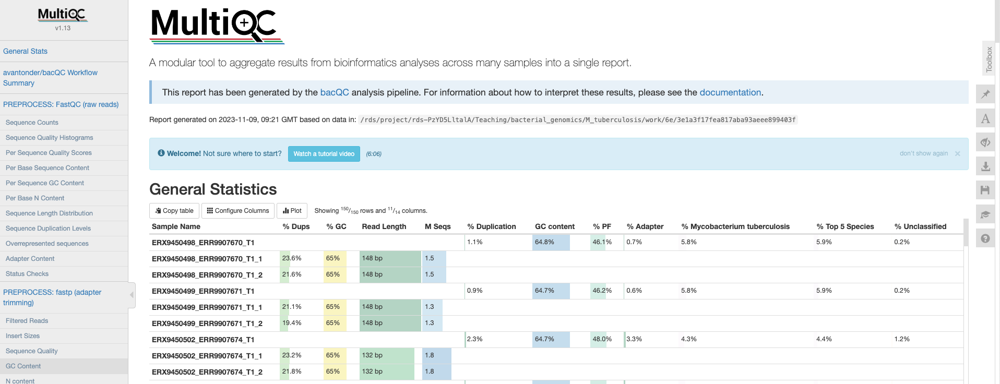
General statistics
Let’s go through each section starting with the “General Statistics”:
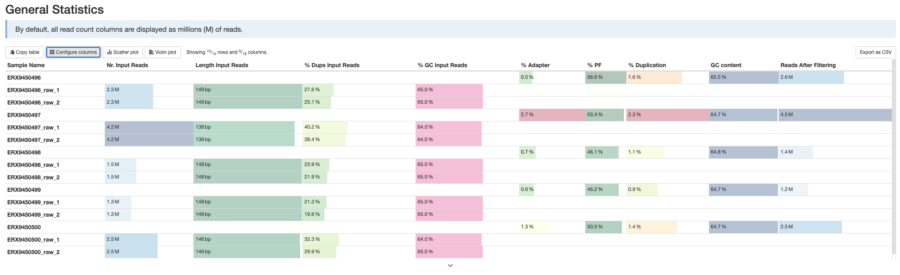
This is a compilation of statistics collected from the outputs of fastp and fastQC. Sequencing metrics such as the % of duplicated reads and GC content of the reads are shown. This is a useful way of quickly identifying samples that are of lower quality due to poor sequencing.
fastQC
These plots will resemble some of the plots we showed you in Introduction to QC with the main difference being that they contain the results for all samples in summary plots generated by MultiQC. The first plot shows the number of sequences in each sample as a barplot (there should be the same number of forward and reverse reads if it’s paired-end sequencing). An estimate of duplicated reads - i.e. reads that are exactly the same - is also shown.
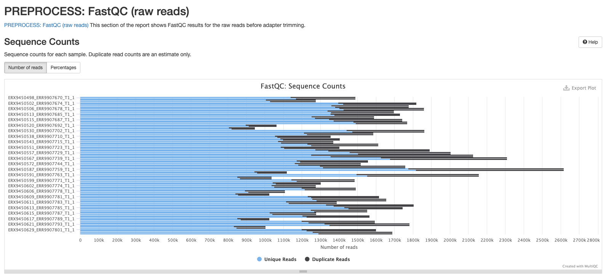
The next plot shows the mean Phred score across each base in all the reads for all samples. You’ll notice that the sequence quality tends to be lower at the beginning and end of reads - this is why we tend to trim the ends of reads to improve the overall quality.

The third plot shows the frequency distribution of per sequence Phred scores for each sample. Samples with a larger number of lower-quality reads will be shifted to the left.

Next we have a plot showing the proportion of each base position for which each of the four normal DNA bases has been called. If you click on a line in the plot, it’ll bring the result for one of your samples, which will make a bit more sense than the MultiQC summary plot.

The fifth plot shows the percentage of bases called G or C in each sample. The peak should match the approximate %GC content of your organism. In this case the peak is around 65-66% which is what we expect from M. tuberculosis. Contaminated samples will show up as the %GC content is likely to be different from the target species.
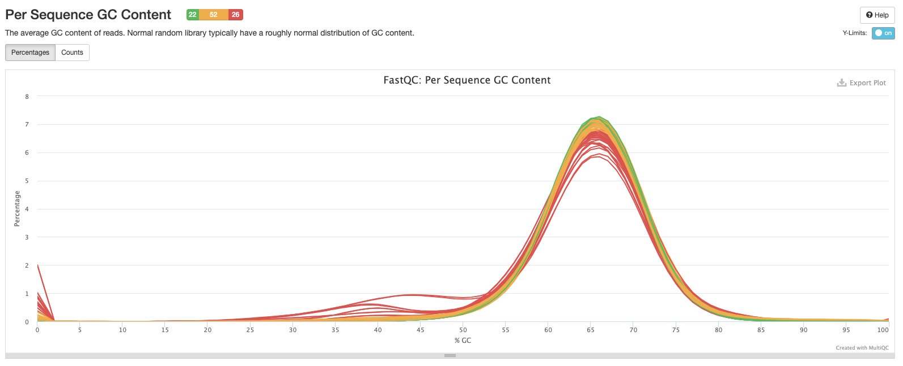
The sixth plot shows the proportion of N’s across the sequences. There may be a higher proportion of Ns at the beginning and end of reads but we don’t want to see N’s in the middle of reads as this implies something has gone wrong during sequencing.

Now, we have the distribution of sequence lengths. Our dataset was sequenced in the same facility so the most common sequence length for all samples is 150 bp. If you’re analysing sequences from different studies you may see different sequence lengths.

The eighth plot shows the number of duplicated reads in each sample. Ideally, you want to see that the majority of your reads are only found once.
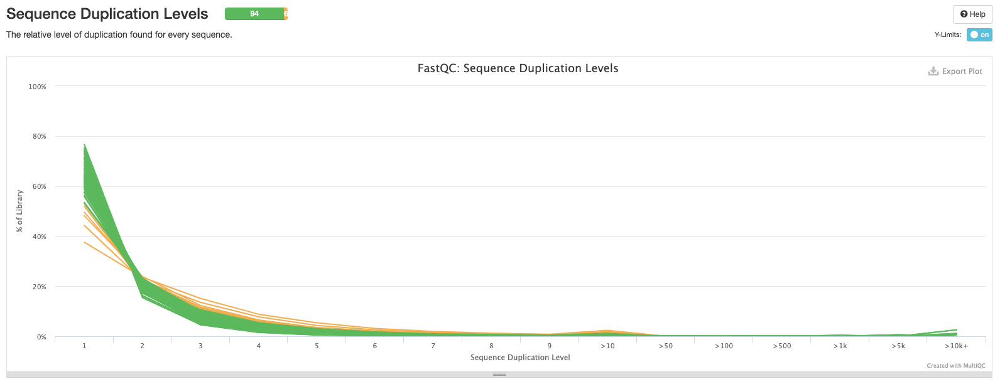
This plot shows the percentage of overrepresented sequences in each sample. Samples with a higher percentage of overrepresented sequences may suggest an issue with library construction like over-amplification of particular DNA fragments.

Now we have a plot showing the cumulative percentage count of the proportion of your sequences which has seen adapter sequences at each position. Typically we should only see adapter sequences at the beginning and end of reads. If there is a higher proportion of adapter sequences in the middle of reads, then something seriously wrong has occurred during sequencing!
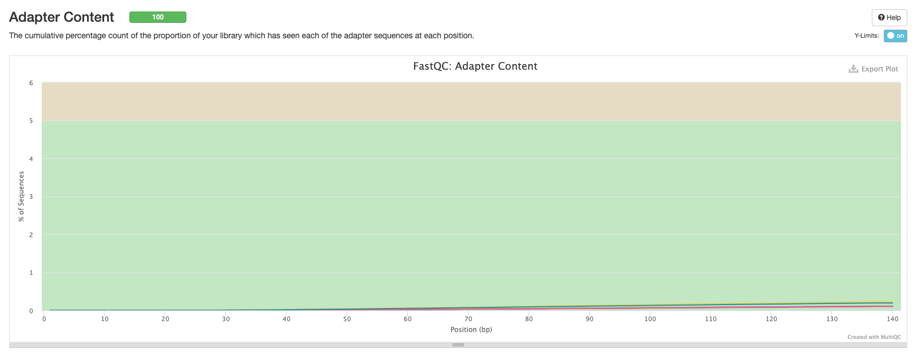
The final plot summarises the previous plots and highlights which samples may be worth investigating further or discarding altogether.
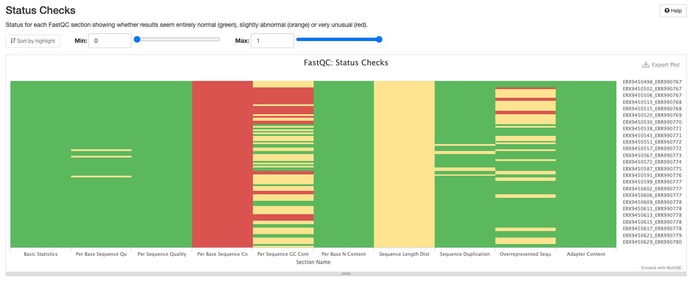
fastp
There are a number of plots showing the results of the fastp step in the pipeline. The first shows the results of the read filtering step where reads are trimmed, adapters removed and low quality reads are thrown out. The reads that passed this step are highlighted in blue.
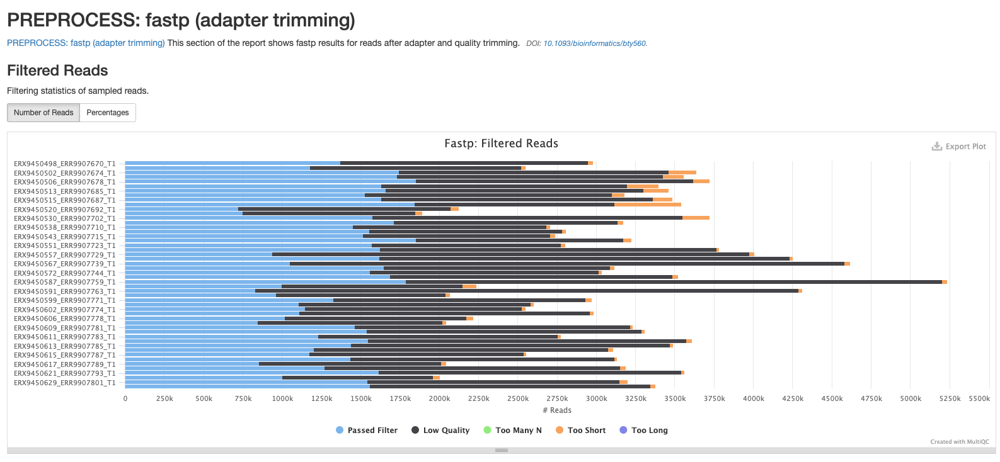
The second plot shows the distribution of insert sizes for each set of sequence files.

The next plot shows the average sequence quality across the reads in each sample. You can see we have drop offs in quality at the beginning and end of reads; this is pretty typical and is an artefact of the sequencing process.
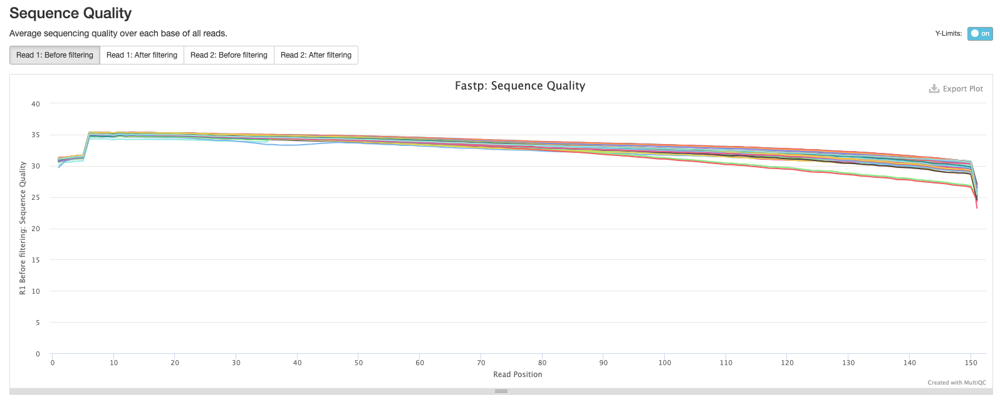
The fourth plot shows the average GC content across the reads in each sample. As you might expect, the average GC content is conserved across all the samples as they are all from the same organism (M. tuberculosis).
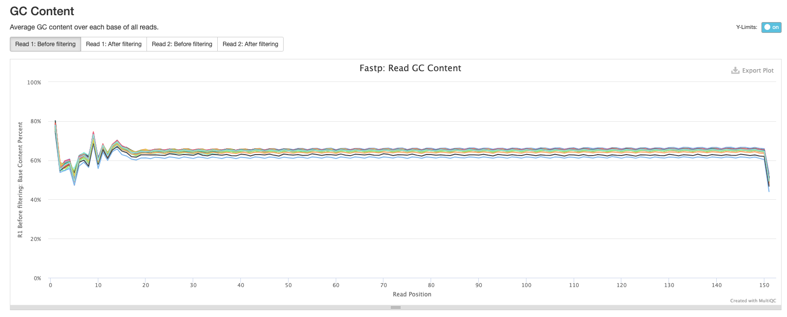
The final fastp plot shows the average N content across the reads in each sample. Similar to what we see in the sequence quality plot, the number of Ns tends to increase towards the end of reads.
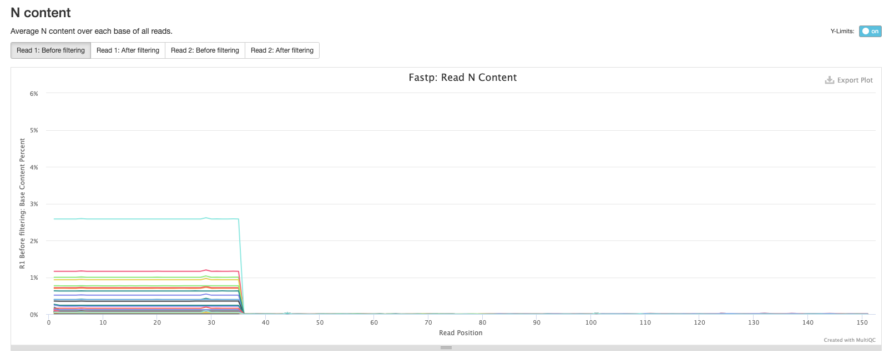
Kraken 2
The next results section of the MultiQC report is a summary of the outputs from Kraken 2. It’s important to note that these results are generated before Bracken is run to refine the species assignment of the reads thus the proportion of reads assigned to the target species may be much lower than the results found in the species_composition.tsv file you’ll mostly be working with.

Bracken
The final results section of the MultiQC report is a summary of the outputs from Bracken. You will see that there are much fewer reads assigned to Other and more reads assigned to Mycobacterium tuberculosis as Bracken has probabilistically re-distributed the Kraken 2 read assignments.

Software versions
This section of the report shows the software run as part of bacQC and the versions used. This is particularly important when reproducing the analysis on a different system or when writing the methods section of a paper.

Methods description
A brief description of the methods used in the pipeline is provided with the relevant citations.

11.4.2 The read_stats_summary.tsv file
One of the outputs from running bacQC is a summary file summarising the reads in the FASTQ files pre- and post-trimming with fastp. This file can be found in preprocessed/bacqc/metadata/read_stats_summary.tsv.
You can open it with spreadsheet software such as Excel from your file browser :
Sample raw_total_bp raw_coverage num_raw_reads trim_total_bp trim_coverage num_trim_reads %reads_after_trimmed
ERX9450498_ERR9907670_T1 440043124 102.336 2980520 198599257 46.1859 1372732 46.0567954585106
ERX9450499_ERR9907671_T1 377518535 87.795 2550884 170989867 39.7651 1178588 46.2031201732419
ERX9450502_ERR9907674_T1 480127121 111.65700000000001 3637820 224190567 52.1373 1744694 47.95987706923377
ERX9450504_ERR9907676_T1 484152311 112.594 3557654 230112090 53.5144 1733156 48.716260771845725
ERX9450506_ERR9907678_T1 519381556 120.786 3721974 253035696 58.8455 1852758 49.778907644169465
ERX9450508_ERR9907680_T1 439374426 102.18 3396118 205770558 47.8536 1631206 48.03148771626899
ERX9450513_ERR9907685_T1 456807540 106.234 3460956 213737167 49.7063 1658838 47.930051696698825
ERX9450514_ERR9907686_T1 443077738 103.041 3181726 207637480 48.2878 1528944 48.053917904935865
ERX9450515_ERR9907687_T1 475127148 110.495 3486940 216999744 50.4651 1634618 46.878294435809046
ERX9450518_ERR9907690_T1 382086897 88.8574 3540978 201474928 46.8546 1844208 52.081882462980566The columns are:
- Sample - our sample ID.
- raw_total_bp - the combined total number of base pairs in the read 1 and read 2 FASTQ files.
- raw_coverage - the expected mean read depth across our genome. This is calculated by multiplying the number of reads by the read length and dividing by the genome size (4300000 bp) which we provided when we ran
bacQC. - num_raw_reads - the number of reads in our FASTQ files (both read 1 and read 2 FASTQ files should have the same number of reads).
- trim_total_bp - the total number of base pairs left after trimming the FASTQ files with
fastp. - trim_coverage - the expected mean read depth across our genome after trimming the FASTQ files with
fastp. - num_trim_reads - the number of reads in our FASTQ files after trimming with
fastp. - %reads_after_trimmed - the proportion of reads left in our FASTQ files after trimming with
fastp.
The main things to look out for in this file are the trim_coverage and %reads_after_trimmed columns. The first gives us a rough idea of how well our reference genome will be covered during mapping or else how good our assemblies might turn out to be when we do de novo assembly. Ideally, the higher this number, the better: at a minimum we want at least 30X coverage (less may suffice for mapping) whilst at the other end, more than 100X is unnecessary. In fact, both the mapping pipeline bactmap and the assembly pipeline assembleBAC we’ll use this week downsample reads to remove any excess reads. This is mainly to speed up the steps in the pipeline and reduce the overall computational cost. The %reads_after_trimmed column gives an indication of the quality of the sequencing: the more reads that are removed by fastp, the lower the overall quality of the sequencing run. In this case, despite the removal of approximately 50% of the reads, we still have sufficient read coverage to proceed with any downstream analyses.
11.4.3 The species_composition.tsv file
Another important output from the bacQC pipeline to consider is the species_composition.tsv file which summarises the results from Kraken 2 and Bracken and can be found in preprocessed/bacqc/metadata/species_composition.tsv.
You can open it with spreadsheet software such as Excel from your file browser :
name Mycobacterium tuberculosis unclassified other
ERX9450498_ERR9907670_T1 99.52841943273346 0.16379992509505206 0.3077806421714939
ERX9450499_ERR9907671_T1 99.53642406588855 0.1945287515531746 0.26904718255826765
ERX9450502_ERR9907674_T1 98.60308257545614 1.1705576317307351 0.22635979281312757
ERX9450504_ERR9907676_T1 98.81634881409809 0.7964108418062598 0.3872403440956447
ERX9450506_ERR9907678_T1 99.08368809334354 0.5640171321283549 0.3522947745281044
ERX9450508_ERR9907680_T1 97.85346504536902 1.4355205479116022 0.7110144067193716
ERX9450513_ERR9907685_T1 98.67929488431771 1.0007790134265255 0.31992610225576357
ERX9450514_ERR9907686_T1 98.76471973622233 0.6654629193489298 0.569817344428742
ERX9450515_ERR9907687_T1 98.86965758101583 0.7738752254688651 0.3564671935153001
ERX9450518_ERR9907690_T1 97.50545840279487 2.2561398218819857 0.23840177532314044The columns are:
- name - our sample ID.
- Mycobacterium tuberculosis - the proportion of raw reads assigned to Mycobacterium tuberculosis.
- unclassified - reads that could not be assigned to an organism in the database. As we used a database consisting of only bacterial, archeal and viral references, unclassified reads likely reflect potential host contamination.
- other - any reads assigned to species that don’t pass a threshold of 5% are assigned to the other category. These may reflect kit or flowcell contaminants.
This quite a simple output and shows that there was very little contamination or non-target sequencing in this run. This may not always be the case - for some runs you may see a variety of different contaminants.
11.5 Summary
- Quality Control of sequencing reads can be automated using a Nextflow pipeline like bacQC
- This pipeline uses:
- FastQC to assess the quality of sequencing reads.
- fastp for quality trimming and adapter removal.
- Kraken2 to determine species composition.
- The results from the pipeline are aggregated in an interactive MultiQC report, which can be used to identify problematic samples.